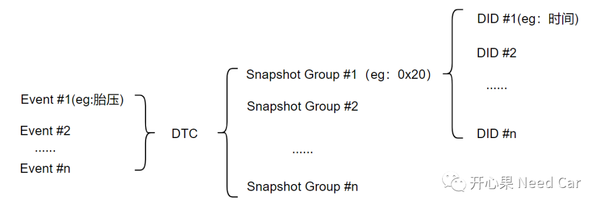
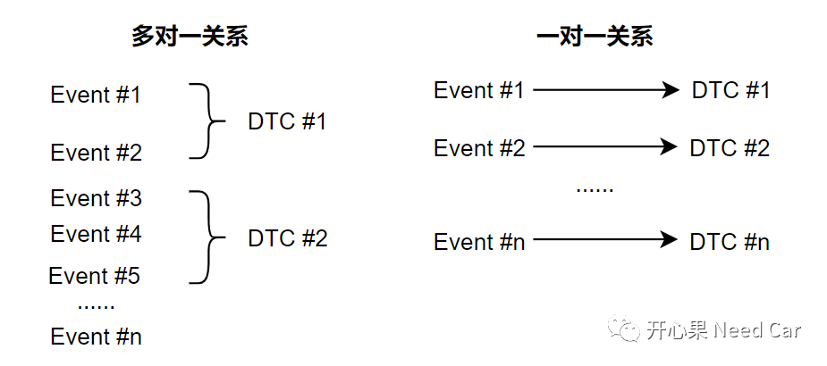
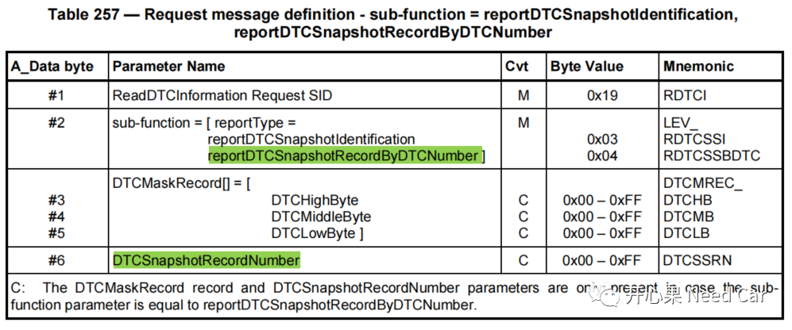
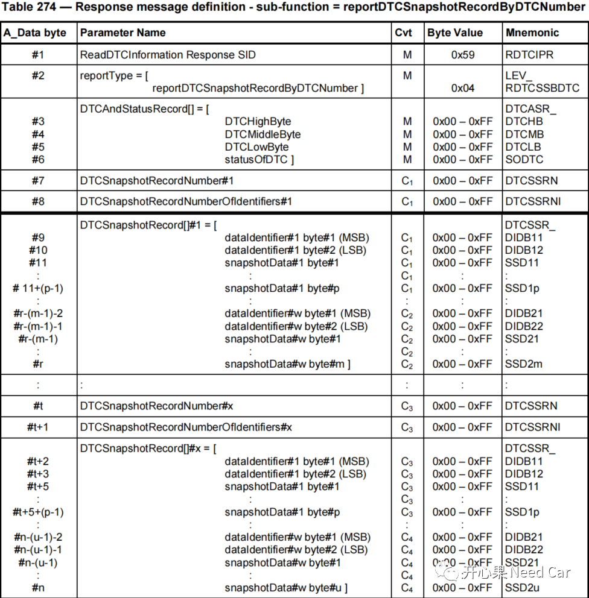
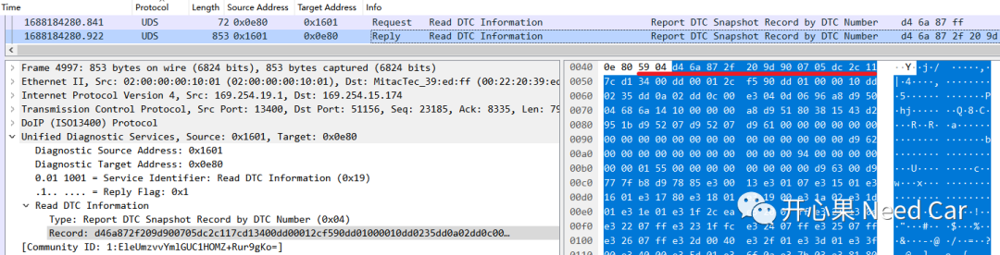
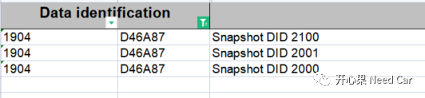

开心果 Need Car · 2023-07-11T08:30:00+08:00 · 微信原文
做汽车诊断开发的同学，对快照数据（Snapshot）应该并不陌生。Snapshot数据在车辆故障排查中扮演着不可或缺的角色，所以，读懂UDS（Unified Diagnostic Services）中Snapshot格式很重要。具体说，是读懂$19服务（Read DTC Information）的sub-function（0x04）格式— reportDTCSnapshotRecordByDTCNumber。本文着重讨论几点问题：
为什么需要Snapshot，Snapshot与DTC关系
$19 04格式解读
1、为什么需要Snapshot，Snapshot与DTC什么关系
我们知道，一辆车，零部件成千上万。当车辆故障时，需要进行维修，如果让维修员逐个靠肉眼排查，问题排查效率势必大打折扣。所以，在控制器的开发中，诊断功能必不可少。OEM会根据不同场景，设计不同的诊断需求，eg：电池低压/过压事件（Event）诊断、通信丢失事件诊断、胎压事件诊断等等。为了更好的区分故障类型，OEM会将这些事件关联到不同的诊断故障码（DTC：Diagnostic Trouble Code）。同时，为了维修人员更快、更准确的识别故障事件，还需要提供一些额外的辅助信息，eg：故障发生时的时间、控制器供电电压、车辆里程等等。为了获取这些信息，可以将这些信息设置一个快照信息组（Snapshot Group），为了区分不同的Snapshot Group，可以为每个Snapshot Group分配一个识别号，即：DTCSnapshotRecordNumber，UDS要求，DTCSnapshotRecordNumber由1 byte组成，0x00一般预留给WWH-OBD使用，0xFF表示控制器（Server）一次将所有的快照数据上报，0x01~0xFE由OEM自行设定，比如：0x20表示一组快照信息。注意，每个DTCSnapshotRecordNumber包含一组快照信息，一组快照信息中，可以包含多个DID，每个DID则包含具体的信息，eg：胎压、里程数等等。
事件（Event）、DTC、Snapshot Group、DID之间的关系示意如下：


2、$19 04格式解读
（一）$19 04的请求格式

如上图，Byte1表示$19服务，Byte2表示sub-function（其中，0x04表示通过DTC号读取快照数据），Byte3~Byte5表示DTC码，Byte6表示DTC快照号，也就是我们常说的快照组（Snapshot Group）。
（二）$19 04的响应格式
$19 04的正响应格式如下所示：

3、$19 04示例解析

（一）$19 04请求
$19 04 D4 6A 87 FF
其中，0xFF表示读取DTC（0xD46A87）对应的所有快照组数据，本文0xD46A87对应两组快照信息。
（二）$19 04响应
此处，着重分析$10 04响应的红线部分：
Byte1：表示正响应格式：0x59
Byte2：表示sub-function：0x04
Byte3~Byte5：表示DTC码，0xD46A87
Byte6：表示此DTC对应的故障状态，0x2F
Byte7：表示DTCSnapshotRecordNumber，0x20
Byte8：表示此快照组一共有多少DID，0x9D，即：157个DID，Byte9~Byte10：表示第一个DID Number，0x9007
Byte11~Byte15：表示DID（0x9007）对应的数据，占用了5Byte
Byte16~Byte17：表示第二个DID Number，0xD134
......
4、拓展

往期精彩回顾
基于Hightec+TC375TP的RT-Thread移植详解